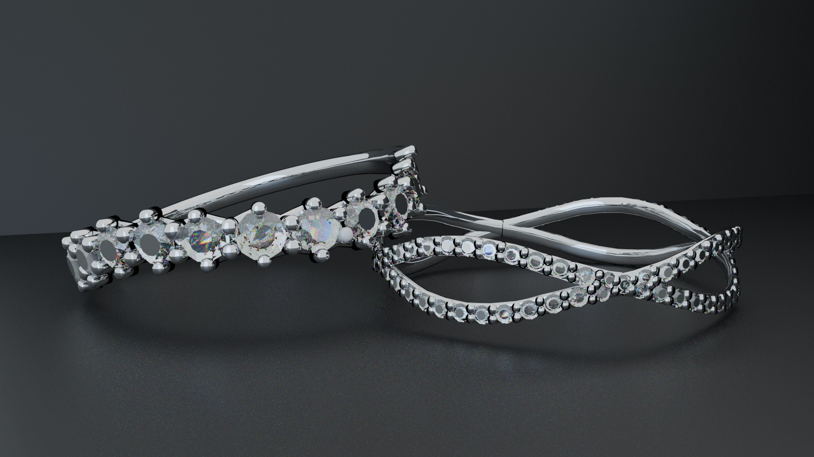
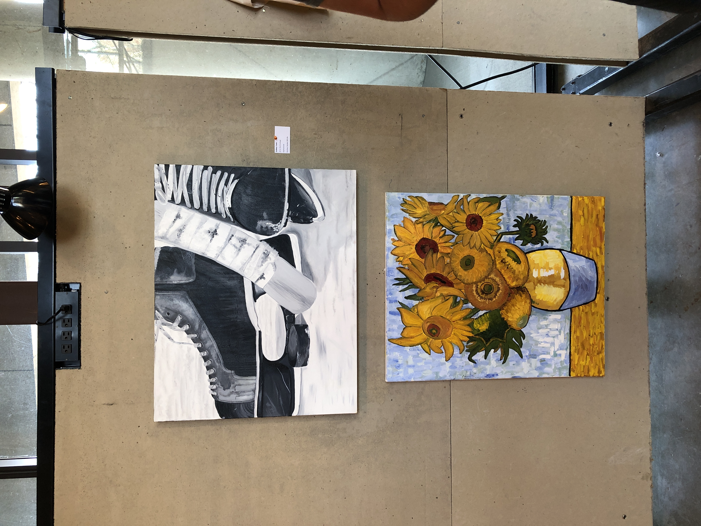

Portfolio
Highlighted Work Gallery Shows Awards Resume
image or video here
Highlighted Work
Gallery of highlighted work here
Gallery Shows
"Radicant Bodies" Online Gallery
April 23, 2020-Current

Three works, A page from the Love, Me comic book, Mime Game Prototype, and my webstie's homepage, were featured in The Ohio State Universiry Art & Technology's online gallery show "Radicant Bodies" starting April 23, 2021.
Visit Each Page: Love, MePlay the Mime Game PrototypeSydneyKit.com homepage
Columbus Spring Art Fest hosted by Buckeye Creative Connection
April 18, 2021

Two works, To Be Remembered and Wood Detail, were featured in the Columbus Spring Art Fest on April 18th, 2021 at the 400 W Rich St Gallery in Columbus. The comic book Love, Me was also displayed on a pedestal near the two works.


To Be Remembered won the audience choice award.

Visit Each Page: To Be RememberedWood DetailLove, Me
Buckeye Boundary Breakers Online Gallery
April 7, 2021
A page from the comic book Love, Me was shown on the instagram account for the Buckeye Boundary Breakers. It featured the comic that discussed American Sign Language.
Visit The Page: Love, Me
"Can You See My Screen?" Online Gallery
December 4, 2020-Current

 front view.jpg)
Three works, the then named Both Rings, now named To Be Remembered, A Laney Day and How Much Did I Sleep Last Night?, were featured in The Ohio State Universiry Art & Technology's online gallery show "Can You See My Screen?" starting December 2020.
A Laney Day is the first video shown on the "Animation- Tran & Sab" page.
Visit Each Page: To Be Remembered (Both Rings)A Laney DayHow Much Did I Sleep Last Night?
Hopkins Hall Gallery
April 2019 - December 2019
Two works, Our Biggest Dream and Tongue Tower, were featured in the Hopkins Hall Gallery during the 2019 summer and autumn semesters.
Our Biggest Dream was shown on a big screen during the opening show and continued to be shown on a monitor in the hallway for the rest of the gallery show.
Visit Each Page: Our Biggest DreamTongue Tower
April 2, 2019
Two works, Hockey Still Life and Replication Sunflowers, were featured in the APX Student Collective.
This was Sydney Kit's first gallery show.
Visit Each Page: Hockey Still LifeReplication Sunflowers
Awards
Audience Choice Award - Columbus Spring Art Fest
Awarded April 18, 2021 to the To Be Remembered work.
The Fergus Material and Scholarships Fund
Awarded March 24, 2021 for the publication of the Love, Me comic book.
Resume